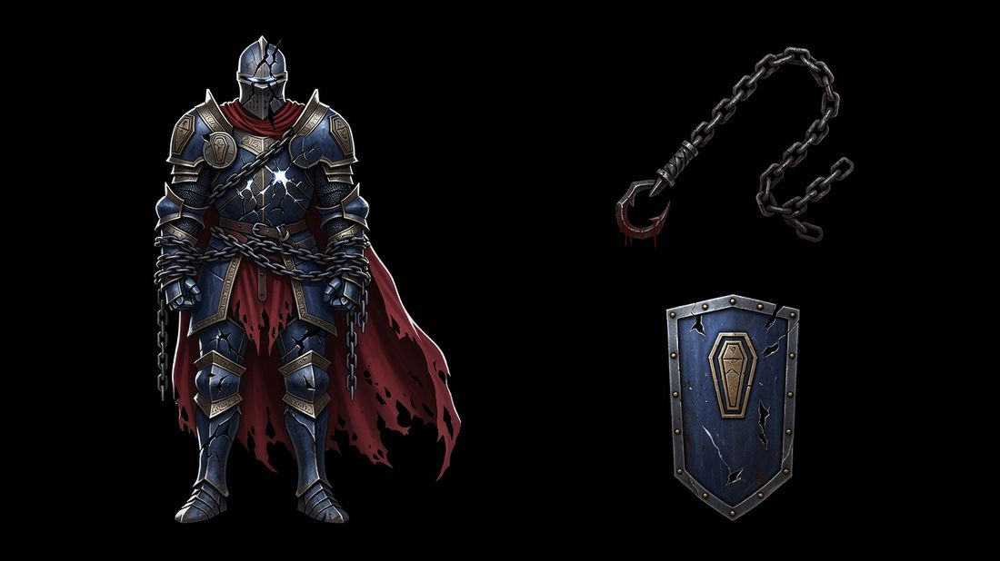
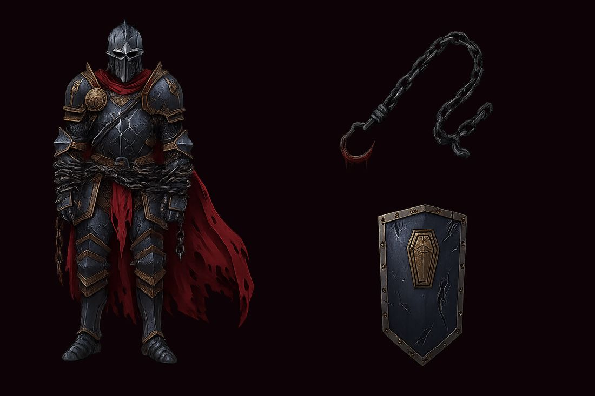
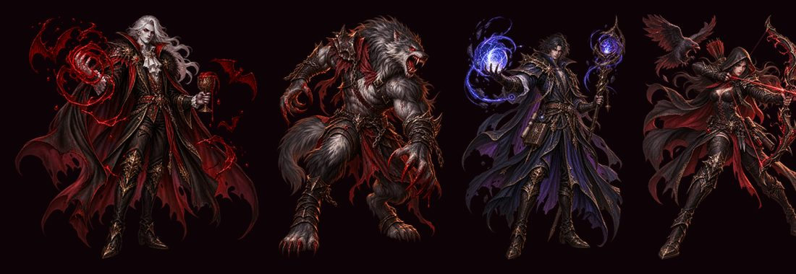
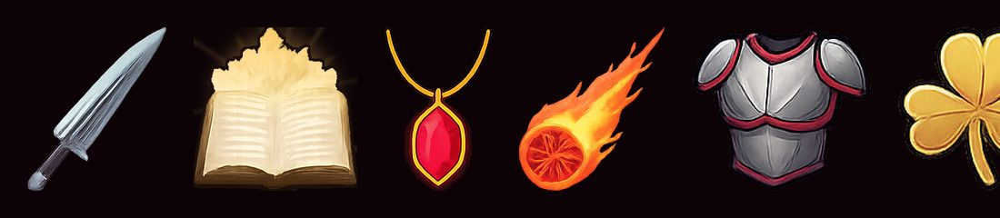

手搓廣告遊戲選集 · 吸血鬼復仇 v2 · 美術
不朽者的角色立繪 ＋ 血鎖 ＋ 鋼鐵壁壘，一張彙整圖同時確認「角色」與「圖示」兩種風格。 還沒有任何東西寫進 Assets/。
照你說的做法：先生一張代表性樣本，風格對了再把 Tier 1／Tier 2 其餘的一次做完。 一張彙整圖同時涵蓋兩種風格（角色立繪 ＋ 武器圖示），所以一次 $0.20 就能兩種都確認。
grok-imagine-image）＋ OpenAI 去背Assets/，全部留在 /tmpSPEND.md下面兩張是同一次生成的前後，請對照看：


原因：gpt-image-1 的 images/edits 是重繪，不是單純把背景挖掉。
去背品質本身是好的（完全透明 75.3%、邊緣半透明 9.7%、用洋紅底合成檢查沒有黑邊毛邊），
但它會順手把畫面重新畫一次。
這件事對這一批特別有影響，因為鋼藍色（#7a8fa8）是血鎖裁判的識別色，
遊戲裡角色腳下的光環會用這個顏色。甲變灰之後，角色跟識別色就對不起來了。
這一題要你決定（見最後一節）。

不朽者走的是同一套語彙（厚塗、全身正面、金色雕花鑲邊、破損披風）， 但刻意用鋼藍當主色跟那四隻的紅／棕／紫分開——它是坦克，不是吸血鬼系的。

既有圖示是厚實、造型單純、柔邊描邊。樣本裡的血鎖與鋼鐵壁壘density 比較高 （鎖鏈的細節多），縮到遊戲裡的圖示尺寸（約 140×140 畫布單位）可能會糊掉—— 這是我自己看到的疑慮，也想聽你的意見。
照提案的 Tier 分級，全部加起來 $3.28（不含重生緩衝）：
| 項目 | 規格 | 花費 |
|---|---|---|
| 風格樣本（本頁） | Grok 圖 ×1 | $0.20 |
| 項目 | 規格 | 估價 |
|---|---|---|
| 武器圖示彙整圖（11 個：階段①的 3 個 ＋ 階段⑤的 8 個） | Grok 圖 ×1 | $0.20 |
血鎖與鋼鐵壁壘這次已經畫出來了，正式那張會把 11 個一起排進去統一風格。
| 特效 | 為什麼需要 |
|---|---|
| 血刃輪舞 | 不生的話會沿用十字斬的刀光，看起來完全一樣 |
| 疫毒領域 | 不生的話會沿用大蒜光環的綠光環 |
| 隕星引力 | 不生的話會沿用隕石術的火焰 |
| 碎岩衝擊 | 不生的話會沿用寒冰新星的冰波（岩石技能放出冰波） |
| 骨釘暴雨 | 不生的話會沿用隕石術的火焰 |
5 × $0.32 = $1.60
特效素材的名稱在程式裡是照家族寫死的字面值，所以除了投射與環繞兩個家族之外， 新武器不生素材就一定會跟既有武器長一樣。血鎖（投射）與鋼鐵壁壘（環繞） 只要有圖示就完整了，不用特效影片——這也是當初挑家族時就考慮進去的。
| 項目 | 規格 | 估價 |
|---|---|---|
| 不朽者 走路（12 幀） | 影片 4s 720p，以本頁的立繪當參考圖 | $0.32 |
| 不朽者 攻擊（8 幀） | 同上 | $0.32 |
| 血鎖裁判 走路 | 同上 | $0.32 |
| 血鎖裁判 攻擊 | 同上 | $0.32 |
血鎖裁判那兩支可以省。 血族領主現在就沒有專屬走路素材，
ApplyJobLook() 找不到素材時會維持原本的角色造型、不會破圖——
先只做識別色光環，之後再補。省下來 $0.64。
| 方案 | 金額 |
|---|---|
| 只補圖示（Tier 0 收尾） | 再花 $0.20 |
| ＋ 5 支新特效（Tier 1） | 再花 $1.80 |
| ＋ 不朽者的走路與攻擊（Tier 2，省掉職業造型） | 再花 $2.44 |
| 全做（含職業造型） | 再花 $3.08 |
| 含三成重生緩衝的上限 | 約 $4.00 |
| # | 要決定的 | 為什麼輪不到我決定 | 我的建議 |
|---|---|---|---|
| 1 | 風格對不對？（跟既有四隻放在一起看） | 這是美術方向，只有你說了算 | 我覺得對——同一套厚塗語彙，但鋼藍主色跟現有四隻分得開 |
| 2 | 去背改掉顏色這件事怎麼處理？ | 三個選項各有代價，而且牽涉識別色 | 見下面三個選項，我建議 B |
| 3 | 圖示的細節密度會不會太高？ | 縮到 140 單位會不會糊掉，要看實機；但要不要為此重畫是美術取捨 | 正式那張我會把 prompt 加「造型單純、粗描邊、少細節」，跟既有圖示對齊 |
| 4 | 做到哪個方案？（$0.20 / $1.80 / $2.44 / $3.08） | 花你的錢 | $2.44 那個（全做但省掉職業造型）——職業造型是最沒有感知差異的一項 |
| 做法 | 代價 | |
|---|---|---|
| A | 接受去背後的灰甲版本 | 免費、零風險。但識別色（鋼藍）失效，角色跟腳下光環對不起來 |
| B（建議） | 用 Grok 原圖，改用程式去背（tools/video_sprite/extract_sprite.py 的邊界連通演算法，純本地不花錢） |
不用再花錢。原圖是純黑背景 + 強邊緣光，正是那支演算法最好處理的情況。要多花一點時間調參數 |
| C | 重生一張，prompt 加強「保持鋼藍」 | 再 $0.20，而且不保證有用——去背那一步還是會重繪 |
我建議 B：extract_sprite.py 本來就是為了「純色背景去背」寫的，而且不花錢。
這張圖的背景是乾淨的純黑、角色又有強邊緣光，條件比它平常處理的影片幀還好。
如果 B 試出來的邊緣不夠乾淨，再退回 A。
跟我說一聲我就往下做。 在你回覆之前我不會再呼叫任何生成 API。
→ v2 實作進度 → 原始設計提案